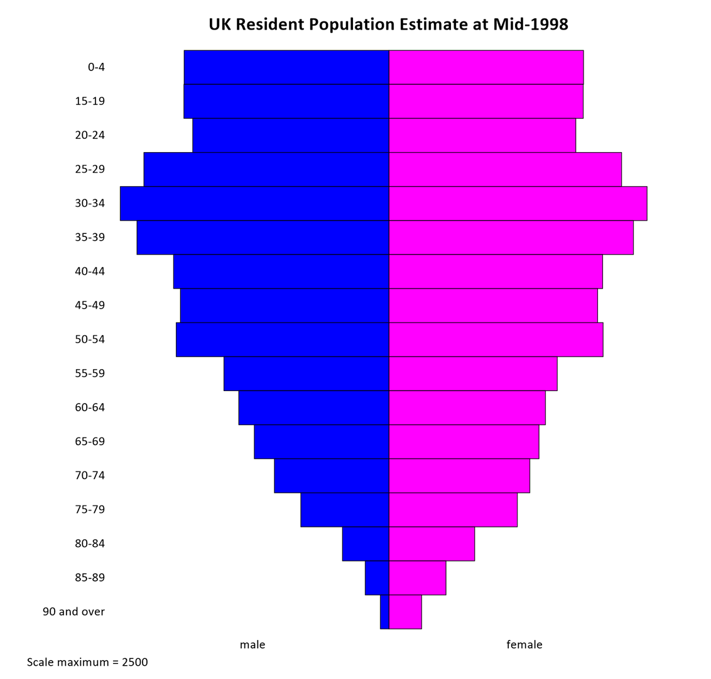

Population Pyramid
Menu location: Graphics_Population Pyramid.
This function plots a population pyramid from counts of people in age groups. For each age group you can specify either the total count or the male and female counts separately.
You should enter the counts for each age group into rows in one column of a workbook. Alternatively, if you want to specify males and females separately then enter the counts into two separate columns; one for males and the other for females. The labels for each age group should be entered into a further column.
StatsDirect lets you specify the maximum scale factor. You might want to specify a maximum scale factor if you are producing several population pyramids that you want to compare on the same scale, in this case the same scale value should be used for all plots.

Example
Test workbook (Graphics worksheet: UK Mid-2024 Age Bands, UK Mid-2024 Males, UK Mid-2024 Females).
The chart above shows the resident population of the United Kingdom at mid-2024, in thousands, by sex and five-year age band (Office for National Statistics mid-year estimates, from the Nomis service). The column marked "UK Mid-2024 Age Bands" holds the labels of the 19 age bands, from 0-4 to 90 and over, and the columns marked "UK Mid-2024 Males" and "UK Mid-2024 Females" hold the counts of males and females in each band. The column marked "UK Mid-2024 Persons" holds the totals of the two, for a pyramid of totals.
To draw it in StatsDirect open the test workbook using the file open function of the file menu. Then select Population Pyramid from the Graphics menu. Select the column marked "UK Mid-2024 Males" when prompted for the numbers in age groups, the column marked "UK Mid-2024 Females" when prompted for the numbers in female age groups, and the column marked "UK Mid-2024 Age Bands" when prompted for the group labels. StatsDirect then shows the chart options, where you can type a title and change the scale maximum. The chart above is titled "UK Resident Population Estimate at Mid-2024"; otherwise the chart is titled "Population pyramid".
For this example:
The chart draws a bar for each age band, in worksheet order from the top, with the males' count to the left of the centre line and the females' count to the right. Both halves run from 0 at the centre to the scale maximum at the edge, and there is no axis: the scale maximum is written under the chart. Scale maximum = 2500, the default, which is the largest count (2484.3 thousand females aged 35-39) rounded up to a neat value, or the largest count itself when that is greater; give pyramids that are to be compared the same scale maximum. A pyramid drawn from a single column of totals, with the female column skipped, is split evenly about the centre line.
Males = 33908.5 thousand, Females = 35347.8 thousand.
The pyramid is widest at 30-34 and 35-39, the two largest bands, which hold the generation born around 1990; the 55-59 band, born in the 1960s, is the next widest, and the bands from 65-69 onwards narrow with age. Males outnumber females in every band up to 20-24, but females outnumber males from the 25-29 band upwards, and from 55-59 the ratio of women to men rises with age: at 90 and over there are 1.97 women for each man.
 R code
R code
This R code reproduces the illustration above. It needs no packages and was checked with R 4.6.1. Paste it into R, or save it as a script and run it.
# Population pyramid: the StatsDirect help illustration (the resident population of
# the UK at mid-2024, in thousands, by sex and five-year age band; the test workbook's
# Graphics worksheet columns UK Mid-2024 Age Bands, UK Mid-2024 Males and UK Mid-2024
# Females) in R
band <- c("0-4", "5-9", "10-14", "15-19", "20-24", "25-29", "30-34", "35-39", "40-44",
"45-49", "50-54", "55-59", "60-64", "65-69", "70-74", "75-79", "80-84", "85-89",
"90 and over")
males <- c(1821.6, 2008.3, 2125.9, 2073.4, 2111.5, 2250.8, 2337.6, 2319, 2213.9, 2021.6,
2180.5, 2271.3, 2107.4, 1743, 1479.7, 1354.3, 817.6, 460.4, 210.7)
females <- c(1732.5, 1910, 2026, 1968.4, 2048.2, 2295.1, 2471.6, 2484.3, 2344.2, 2096.5,
2261.7, 2368.3, 2203.8, 1846.3, 1628.3, 1554.6, 1026.4, 666.4, 415.2)
# StatsDirect draws a bar for each age band, in worksheet order from the top, with the
# males' count to the left of a centre line and the females' count to the right. Both
# halves run from 0 at the centre to the scale maximum at the edge, and there is no
# axis: the scale maximum is written under the chart. Its default is the largest count
# rounded up to a neat value (the top label of the axis StatsDirect would draw for 0 to
# that count), or the largest count itself when that is greater. The default is 2500
# here, which pretty() also gives. Give pyramids that are to be compared the same
# scale maximum.
scale_max <- max(pretty(c(0, males, females)))
cat("Scale maximum =", scale_max, "\n")
# Base R has no pyramid function: an empty plot with no axes, then rect() draws the
# bars of a horizontal bar chart back to back, blue for males and magenta for females
# as StatsDirect colours columns titled "Males" and "Females".
n <- length(band)
top <- n:1 # the row of each band, counted from the bottom, so the first is at the top
op <- par(mar = c(4, 7, 3, 1))
plot(NA, xlim = c(-scale_max, scale_max), ylim = c(0, n), axes = FALSE, xlab = "",
ylab = "", main = "Population pyramid")
rect(-males, top - 1, 0, top, col = "blue")
rect(0, top - 1, females, top, col = "magenta")
segments(0, 0, 0, n)
mtext(band, side = 2, at = top - 0.5, las = 1, line = 0.5)
mtext(c("male", "female"), side = 1, at = c(-scale_max, scale_max) / 2, line = 0.5)
mtext(paste("Scale maximum =", scale_max), side = 1, line = 2.5, adj = 0)
par(op)
# A pyramid from a single column of totals (the workbook's UK Mid-2024 Persons) is
# split evenly about the centre line: rect(-total / 2, top - 1, total / 2, top).
# The values plotted
cat("UK Mid-2024 Age Bands UK Mid-2024 Males UK Mid-2024 Females\n")
for (i in seq_len(n)) {
cat(sprintf("%-23s %17.1f %21.1f\n", band[i], males[i], females[i]))
}
# What the chart shows, in thousands
six <- function(x) formatC(x, digits = 6, format = "f", drop0trailing = TRUE)
cat("Males =", six(sum(males)), " Females =", six(sum(females)), "\n")
cat("Largest band:", band[which.max(males + females)], "\n")
cat("Females outnumber males from the", band[females > males][1], "band upwards\n")
cat("At 90 and over:", formatC(females[n] / males[n], digits = 2, format = "f"),
"women for each man\n")